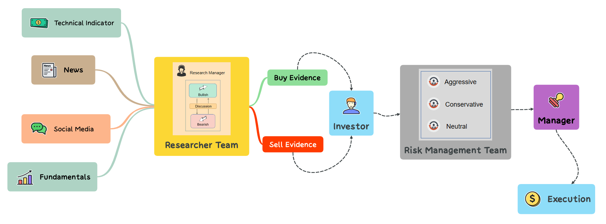

In the financial field, most of the existing research is limited to single-agent systems solving a single task or multi-agent frameworks with independent data collection, lacking exploration in simulating the trading pipeline of real-world trading firms. This limits the system from capturing potential gains from real-world trading processes that have been optimized through practical experience. InvestAgents implements an automated real-time multi-agent trading framework by simulating the investment processes of trading firms. This framework assigns diverse roles to LLM-based agents, such as fundamental analysts, sentiment analysts, and technical analysts. In decision-making, there are four components: 1. Researchers and Research Manager; 2. Investor; 3. Risk Management Analysts. 4. Fund Manager. We use multi-agent collaboration and debate, heuristic reflection mechanisms based on internal knowledge and experience, and multi-angle risk assessment to develop the investment plan. We use multi-agent collaboration and debate, heuristic reflection mechanisms based on internal knowledge and experience, and multi-angle risk assessment to develop the optimal investment plan. In addition, through the communication protocol that combines structured data and natural language data, InvestAgents has achieved a balance between communication efficiency, accuracy and flexibility.
InvestAgents Overall Framework. The framework bridges existing gaps by emulating multi-agent decision-making processes of professional trading teams. It incorporates specialized agents tailored for distinct trading functions, inspired by the organizational structures of institutional trading firms.
InvestAgents introduces a structured communication protocol for managing agent interactions, in which agents communicate primarily via structured documents and standardized diagrams (e.g., flowcharts, sequence diagrams):
Examples are available in the InvestAgents Github repository.